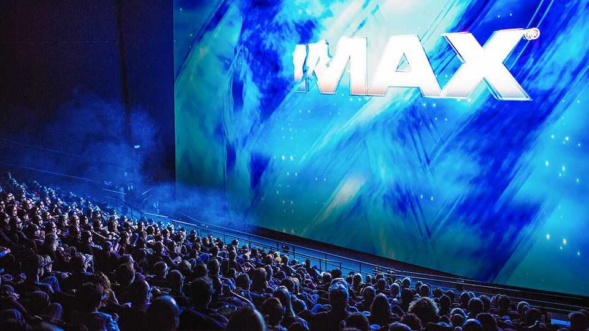
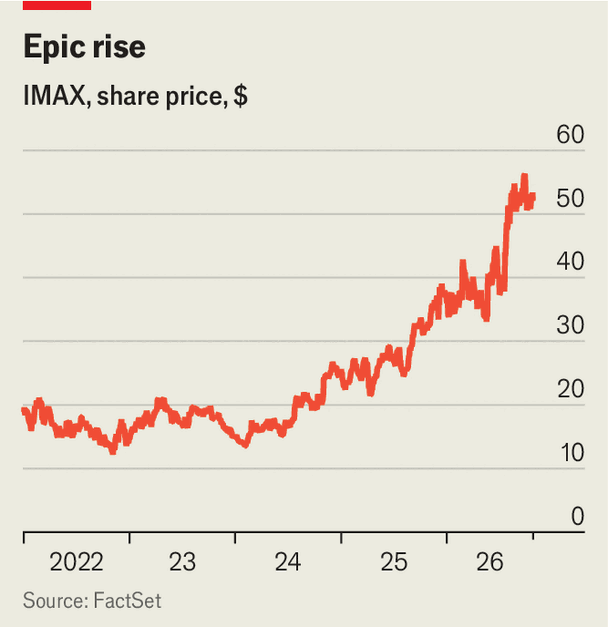

After its Odyssey, IMAX hits the big time
Its popularity reflects a shift in how audiences think about cinemas

Oct 29th 2026
IMAX IS ALMOST 60 years old. Richard Gelfond, its boss, is in his 70s. In the 32 years since he acquired the supersize-screen business from its Canadian founders, IMAX has been through near-death experiences and the wilderness years of the covid-19 pandemic. Then came Nolanomics. First was “Oppenheimer”, the 2023 tour de force directed by Christopher Nolan. This summer brought “The Odyssey”, by far the highest-grossing film of all time for IMAX. Between June and September IMAX screens, which make up less than 1% of the global cinema total, generated 5.8% of worldwide box-office revenues. Mr Gelfond describes the success in Homeric terms. “I’m now a grandfather,” he says. “I thought I could enjoy this with my children. I didn’t think it would take until my grandchildren to get there.”

Nolanomics has underpinned a tripling of IMAX’s share price over the past three years (see chart). Analysts expect record earnings when the company unveils its third-quarter results next week. Yet some on Wall Street fret that it has become a one-hitmaker wonder. Talk of a potential takeover has played a part in its surging share price.
In an interview with The Economist, Mr Gelfond says he expects IMAX to continue to grow next year, buoyed by what he hopes will be a wider slate of blockbuster releases and a shift in the way audiences approach entertainment. He points out that interest in IMAX has grown particularly quickly among Gen Z. Youngsters are “overdosing” on digital entertainment through their smartphones. But they are also increasingly willing to pay a premium for richly produced communal experiences such as a night at an IMAX. “There’s just a global craving to be with other people enjoying entertainment together,” he says.
IMAX is well-positioned to cash in on that desire, for three reasons. The first is brand. Only 41 of its 1,800 screens are the auditorium-size 70mm variety, projecting physical film twice as wide as the 35mm standard. They have a scarcity value as well as a visual richness that cinephiles love, helping explain why tickets for “The Odyssey” on some of these screens sold out a year in advance.
Even for IMAX’s other screens, which rely on digital projection, that reputation rubs off, helping to make a visit feel like an experience, rather than just another trip to the cinema. That, in turn, results in premium prices—though still far cheaper than a live concert or sports match.
IMAX’s reputation attracts not just audiences but film-makers. Some devotees, such as Mr Nolan, make use of special IMAX cameras (including for the entirety of “The Odyssey”). Less fanatical directors still value the prestige that comes from their films being shown on IMAX screens. One of the most anticipated movies of next year, “Narnia: The Magician’s Nephew”, made by Greta Gerwig of “Barbie” fame, will run in IMAX theatres before its release on Netflix, a streaming platform.
IMAX’s second strength is its business model. It does not own or operate cinemas. Instead it sells or leases its projection and sound technology to them, then takes a cut of their revenue. Studios also pay it to show their films. Its presence is global: 60% of revenue comes from countries outside North America, including China, with a decent share of productions shown in languages other than English.
Mr Gelfond says that IMAX has deals to increase the number of screens by 500 over the next few years. But it is a slow and fiddly process. To kit out a giant cinema near Frankfurt, Mr Gelfond says IMAX had to paint the screen in a hockey arena with a secret formula, fold it and fly it to the venue. “You can’t just snap your fingers and there’s an IMAX theatre,” he says.
IMAX’s brand and business model reinforce a third strength: barriers to entry. Alicia Reese of Wedbush, a broker, says that IMAX has a several-year head start on would-be rivals. Even if they could catch up technologically, it would take time to build credibility with audiences and film-makers and match IMAX’s global reach.
Still, competition is heating up. Disney, an entertainment giant, has recently created an umbrella brand, Infinity Vision, that it hopes will serve as an alternative to IMAX. Rather than a new technology, Infinity Vision is a certification programme that will let various other supersize-screen brands claim Disney’s stamp of approval.
It will soon be put to the test. On December 18th IMAX and Infinity Vision will go head to head, launching “Dune: Part Three” and “Avengers: Doomsday” on their respective screens. Yet both may well end up benefiting if “Dunesday” turns into a reprise of the “Barbenheimer” battle in 2023, which spurred cinema-going after a quiet few years. Already 2026 is shaping up to be the best year for the box office since the pandemic, thanks not to larger audiences but higher ticket prices—including for large-format showings. Moviegoers are not IMAXed out yet. ■